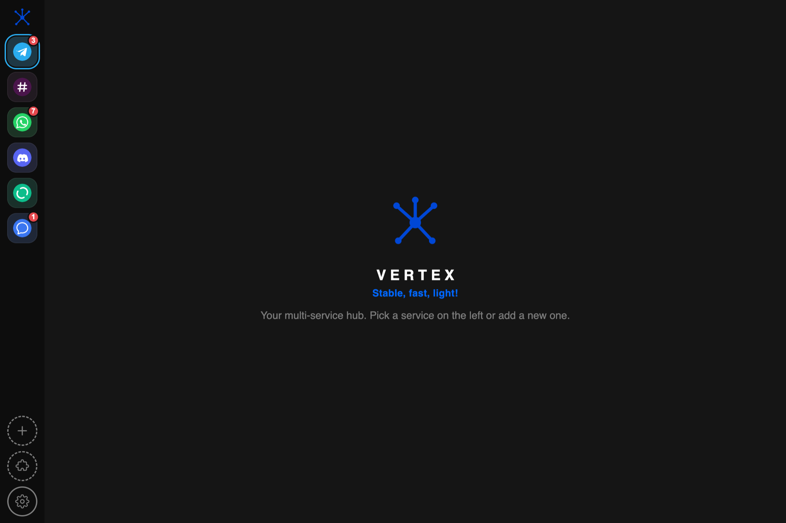
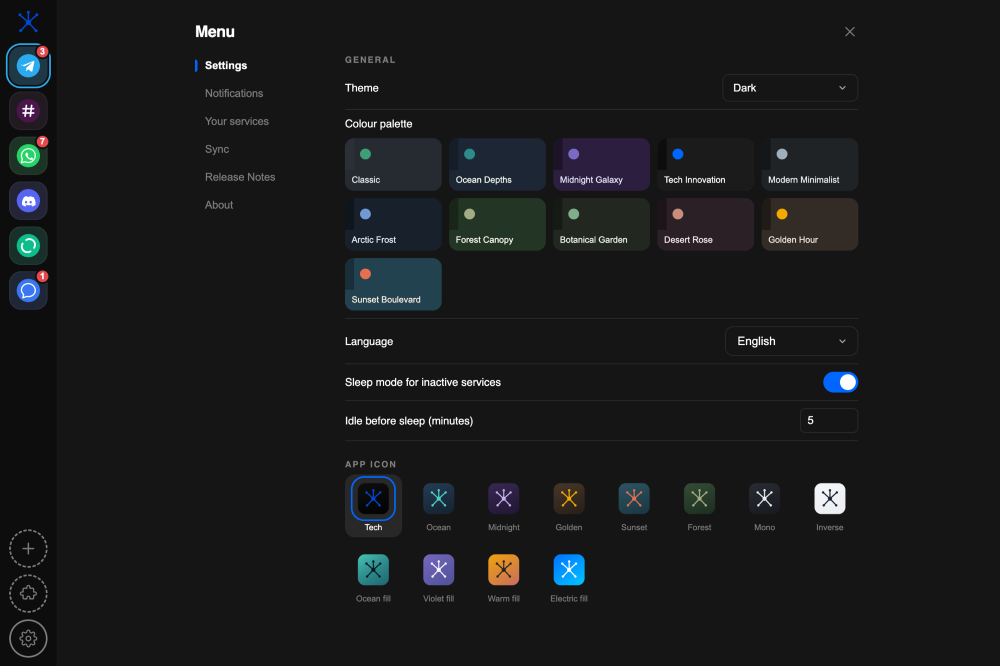

01
Isolated sessions
Every service gets its own storage partition. Two work accounts and a private one in the same messenger, all signed in at once, none of them aware of the others.
Messengers, mail and web apps side by side. Each service runs in its own isolated session, so several accounts of the same service stay signed in at once.

Works with the web apps you already use
Vertex owns the frame — the rail, the title bar, notifications and settings. Inside, each service renders itself exactly as it does in a browser.
Every service gets its own storage partition. Two work accounts and a private one in the same messenger, all signed in at once, none of them aware of the others.
Banners come from macOS itself, so dismissing one does not drag you into the app. If you switch notifications for Vertex off in System Settings, nothing appears — that setting has the last word.
Telegram, Slack, WhatsApp, Discord, Gmail, Notion, Figma, Linear, ChatGPT, Zoom, Nextcloud and more from the catalog — or paste any URL and it becomes a service.
Inactive services are throttled and put to sleep after a few minutes, so a dozen open services do not cost you a dozen services' worth of CPU.
Content blocking, cookie banners, proxy. The registry is data only — plain JSON, no executable code is fetched or run.
Eleven palettes, each in a dark and a light version, plus twelve colourways for the app icon. Pick a look and the whole frame follows.
Every service can carry its own stylesheet and script, kept as plain files you edit in your editor. Restyle Element, hide what you never use, add the shortcut you miss.
Hold an icon in the rail and move it; the others slide aside. Vertex remembers the order, and a plain click still just opens the service.
Other hubs cap their free tier — two accounts per app, a handful of apps, multi-login behind a subscription. Vertex has no tiers.
Unlimited services, unlimited accounts per service, extensions, themes. No trial, no plan to upgrade to.
Vertex has no sign-up and sends nothing about you anywhere. Your logins stay in each service’s own storage on your Mac.
Your services, untouched. Vertex does not read, summarise or reroute your messages — it just gives each app its own window.
The registry is signed JSON. Nothing downloaded can execute — a content blocker is filter lists, a proxy is an address.
Twelve messengers are ready in the catalog, next to mail, docs, design and AI tools. Pick one, sign in once, done — or paste any web address.
Vertex itself contacts GitHub only when you open the extension list or a filter list updates, and Google’s favicon service for addresses you add by hand. Everything else is the services you open, talking to their own servers.
Show a code on one Mac, scan or paste it on the next: the list of services and a few settings come across. Logins, cookies and your own scripts never do.
The mark is a vertex — the point where edges meet, which is what the app does with your services. Pick the colourway that suits your dock.

| App | Free plan | To remove limits |
|---|---|---|
| Everything, no limits | — | |
| Rambox | 2 accounts per app | Pro, $7 / month |
| Wavebox | 2 groups of 2 apps | Pro, €8.33 / month |
| Shift | 5 spaces, 10 apps | Advanced, $199.99 / year |
Limits of the free plans as published on the vendors’ sites, September 2026.
Download the DMG, drag Vertex into Applications. One extra step the first time — please read it, otherwise the app looks broken when it is not.
Vertex is signed ad-hoc, not with an Apple Developer ID — that certificate costs $99 a year and this is a free app. macOS therefore greets the first launch with “Vertex is damaged and can’t be opened”. The download is fine; macOS simply refuses to vouch for it.
Right-click Vertex.app and choose Open, then confirm. Or clear the quarantine flag once:
xattr -dr com.apple.quarantine /Applications/Vertex.app
After that it launches normally. Only the very first run is affected.
Yes. There are no paid plans, no trial and no feature held back.
Vertex is signed ad-hoc instead of with a paid Apple Developer ID. The download is fine — open it once with right-click → Open, or run the xattr command above.
On your Mac, in a separate storage partition for every service. Removing a service deletes its data too.
Yes — paste any web address and it becomes a service with its own session.
Not at the moment. Builds are for Apple Silicon (arm64), macOS 12 Monterey or newer.
The list of services (name, address, mute and notification switches), language and a few settings. No logins, cookies or custom code.
Free for macOS. Download, drag into Applications, sign in once per service.